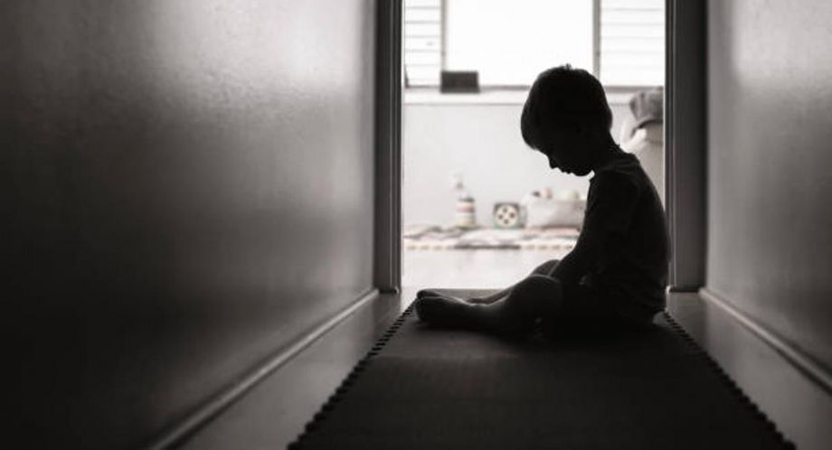
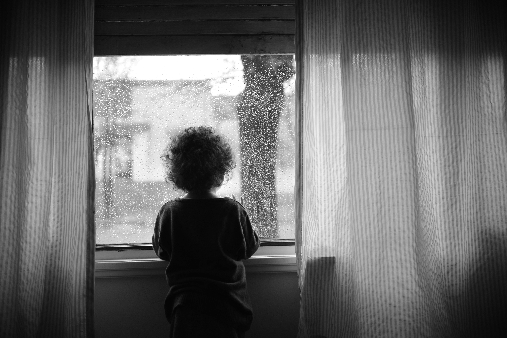
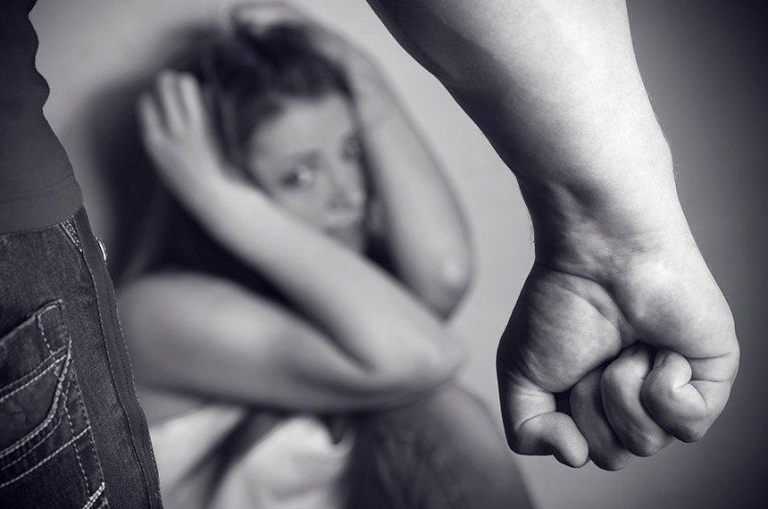
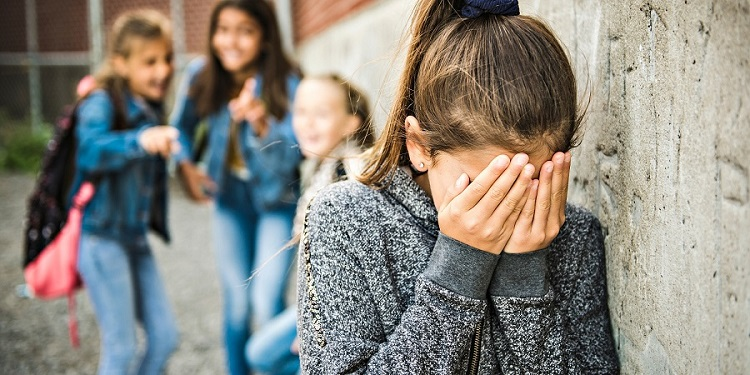

A violência contra crianças e adolescentes representa um dos maiores problemas sociais enfrentados pela sociedade atual. Em diferentes regiões do Brasil e do mundo, milhares de crianças convivem diariamente com agressões físicas, psicológicas, negligência, violência sexual e diferentes formas de abuso que comprometem profundamente o desenvolvimento saudável, a segurança emocional e a dignidade humana. Muitas vezes, essas situações acontecem dentro do próprio ambiente familiar, local onde a vítima deveria encontrar acolhimento, proteção e segurança.
A infância é considerada uma fase essencial para o desenvolvimento emocional, psicológico, físico e social de qualquer indivíduo. Quando uma criança cresce em um ambiente marcado pelo medo, pela agressão ou pela ausência de cuidado, as consequências podem acompanhar toda a vida adulta. Diversos estudos realizados por instituições nacionais e internacionais demonstram que crianças vítimas de violência possuem maior risco de desenvolver transtornos emocionais, dificuldades escolares, ansiedade, depressão, problemas de autoestima e dificuldades de convivência social.
O Estatuto da Criança e do Adolescente (ECA) determina que toda criança e adolescente possui direito à vida, à saúde, à educação, à alimentação, ao respeito, à convivência familiar e comunitária, além da proteção integral contra qualquer forma de negligência, exploração, discriminação, violência, crueldade ou opressão. A proteção infantil é uma responsabilidade compartilhada entre família, sociedade e Estado.
Muitas situações de violência permanecem escondidas durante anos porque as vítimas sentem medo, vergonha ou insegurança para denunciar. Em diversos casos, a criança sequer compreende que está sofrendo violência, acreditando que as agressões fazem parte da rotina normal da convivência familiar. Por isso, campanhas educativas, conscientização social e informação correta são fundamentais para fortalecer a proteção infantil.
Nesta página, você encontrará informações detalhadas sobre os principais tipos de violência contra crianças e adolescentes, seus sinais, consequências, impactos emocionais e a importância da denúncia. Conhecer essas informações é essencial para identificar situações de risco e ajudar na proteção das vítimas.
A violência física acontece quando uma pessoa utiliza força física para machucar, agredir ou causar sofrimento a outra pessoa. Esse tipo de violência pode ocorrer através de tapas, socos, empurrões, queimaduras, puxões, beliscões, chutes, objetos arremessados ou qualquer ação que provoque dor física e lesões corporais. Em muitos casos, as agressões acontecem dentro do ambiente familiar e são praticadas por pessoas próximas da vítima, dificultando a denúncia e aumentando o medo da criança.
Muitas vítimas de violência física convivem diariamente com ameaças e agressões constantes, vivendo em estado permanente de insegurança. Algumas crianças passam a apresentar medo excessivo, isolamento, comportamento agressivo, tristeza constante e queda no desempenho escolar. Também é comum que a vítima tente esconder hematomas, feridas ou marcas no corpo por medo das consequências da denúncia.
Especialistas alertam que a violência física não causa apenas danos corporais imediatos. As consequências emocionais também podem ser extremamente graves e duradouras. Crianças expostas à violência física podem desenvolver ansiedade, depressão, dificuldades emocionais, baixa autoestima, medo constante e dificuldade para estabelecer relações de confiança ao longo da vida.
Alguns sinais podem indicar situações de violência física, como hematomas frequentes, marcas no corpo, queimaduras, fraturas inexplicáveis, medo excessivo de adultos, mudanças bruscas de comportamento, agressividade, isolamento social, tristeza constante e dificuldade de concentração. Em muitos casos, a vítima demonstra receio de voltar para casa ou evita contato físico com outras pessoas.
É importante compreender que nem sempre os sinais são visíveis imediatamente. Algumas vítimas tentam esconder as agressões por medo de represálias ou por acreditarem que não serão acolhidas ao pedir ajuda. Por isso, a atenção de familiares, professores, profissionais da saúde e da sociedade em geral é fundamental para identificar situações de risco.
As consequências da violência física podem acompanhar a vítima durante toda a vida. Além das lesões corporais, esse tipo de violência pode comprometer o desenvolvimento emocional, afetar a aprendizagem escolar e gerar traumas psicológicos profundos. Crianças que convivem com agressões frequentes podem crescer acreditando que a violência é uma forma normal de resolver conflitos, reproduzindo comportamentos agressivos em outras relações sociais.
Estudos realizados por instituições de proteção à infância demonstram que crianças expostas à violência física possuem maior probabilidade de desenvolver transtornos de ansiedade, depressão, insegurança emocional e dificuldades de relacionamento na vida adulta. O sofrimento emocional causado pelas agressões pode permanecer mesmo após o fim da violência.
O acolhimento psicológico, a proteção imediata e o acompanhamento familiar e social são fundamentais para ajudar na recuperação da vítima. A denúncia também possui papel essencial para interromper ciclos de violência e garantir segurança às crianças e adolescentes em situação de risco.

A violência psicológica ocorre quando palavras, atitudes ou comportamentos provocam sofrimento emocional, medo, humilhação, insegurança ou danos à saúde mental da vítima. Diferente da violência física, esse tipo de agressão nem sempre deixa marcas visíveis no corpo, porém seus impactos emocionais podem ser extremamente profundos e duradouros.
Humilhações constantes, ameaças, manipulação emocional, xingamentos, rejeição, isolamento social, chantagens emocionais e intimidações fazem parte da violência psicológica. Muitas crianças e adolescentes vítimas desse tipo de violência passam a acreditar que não possuem valor, desenvolvendo baixa autoestima, medo excessivo e insegurança constante.
Em diversos casos, a violência psicológica acontece junto com outras formas de violência, aumentando ainda mais o sofrimento emocional da vítima. Crianças submetidas constantemente a agressões verbais e humilhações podem apresentar tristeza frequente, crises de ansiedade, dificuldades escolares e problemas de socialização.
Os impactos emocionais da violência psicológica podem acompanhar a vítima durante muitos anos. Ansiedade, depressão, síndrome do pânico, dificuldades de relacionamento, medo constante e insegurança emocional são consequências frequentes. Algumas vítimas também passam a apresentar comportamentos de isolamento social e dificuldade para confiar em outras pessoas.
Crianças que crescem em ambientes marcados por agressões emocionais constantes podem desenvolver dificuldades de expressão emocional, problemas de autoestima e sofrimento psicológico intenso. Em muitos casos, o trauma emocional permanece mesmo após o encerramento da violência.
A escuta acolhedora é essencial para ajudar vítimas de violência psicológica. Muitas crianças sentem medo de falar sobre o que estão vivendo porque acreditam que não serão acreditadas ou têm receio das consequências da denúncia. O apoio familiar, escolar e psicológico pode representar um passo fundamental para interromper situações de violência.
Profissionais da educação, saúde e assistência social possuem papel importante na identificação de sinais emocionais e comportamentais relacionados à violência psicológica. A conscientização da sociedade também é fundamental para combater esse tipo de agressão.

A negligência acontece quando responsáveis deixam de oferecer cuidados básicos relacionados à saúde, alimentação, higiene, educação, proteção e segurança da criança ou adolescente. Embora muitas vezes seja silenciosa, a negligência representa uma forma extremamente grave de violência e pode comprometer profundamente o desenvolvimento infantil.
Crianças vítimas de negligência frequentemente convivem com falta de alimentação adequada, ausência de acompanhamento médico, descuido com higiene pessoal, abandono emocional e exposição constante a situações de risco. Em alguns casos, também ocorre abandono escolar e ausência de acompanhamento familiar.
A negligência pode provocar impactos físicos, emocionais, sociais e cognitivos. Muitas crianças negligenciadas apresentam dificuldades escolares, insegurança emocional, baixa autoestima e problemas de socialização. A ausência de cuidado interfere diretamente na construção emocional da vítima e em sua percepção de proteção e acolhimento.
Os impactos da negligência podem acompanhar a vítima durante toda a vida. Problemas de saúde, atrasos no desenvolvimento, dificuldades emocionais, transtornos psicológicos e insegurança emocional são consequências frequentes. Em alguns casos, a negligência também pode comprometer o desenvolvimento cognitivo e dificultar a aprendizagem escolar.
Especialistas destacam que crianças que crescem sem acolhimento emocional e sem acesso a cuidados básicos podem desenvolver dificuldades afetivas importantes, além de sentimentos de abandono, tristeza e rejeição. O acompanhamento psicológico e social é essencial para ajudar na recuperação emocional dessas vítimas.
Conselhos tutelares, escolas, unidades de saúde e serviços sociais possuem papel fundamental na identificação de situações de negligência. A denúncia permite que a criança receba acolhimento, proteção e acesso aos serviços necessários para garantir seus direitos fundamentais.
A conscientização da sociedade também é essencial para combater a negligência infantil. Muitas vezes, vizinhos, familiares e professores conseguem perceber sinais de abandono e podem ajudar na proteção da vítima.

A violência sexual envolve qualquer ato sexual praticado sem consentimento ou qualquer forma de exploração sexual envolvendo crianças e adolescentes. Esse tipo de violência representa uma grave violação dos direitos humanos e provoca impactos extremamente profundos na saúde emocional, psicológica e social da vítima.
Muitas situações de violência sexual acontecem dentro do ambiente familiar ou são praticadas por pessoas próximas da vítima. Em diversos casos, o agressor utiliza ameaças, manipulação emocional ou intimidação para impedir denúncias. O medo e a vergonha fazem com que muitas vítimas permaneçam em silêncio durante anos.
Crianças e adolescentes vítimas de violência sexual podem apresentar mudanças bruscas de comportamento, medo excessivo, isolamento social, ansiedade, tristeza constante, dificuldades escolares e alterações emocionais importantes. Algumas vítimas também desenvolvem transtornos psicológicos graves relacionados ao trauma vivido.
Os impactos emocionais da violência sexual podem acompanhar a vítima durante toda a vida. Depressão, ansiedade, síndrome do pânico, insegurança emocional, medo constante, dificuldades afetivas e transtornos relacionados ao trauma são consequências frequentes.
O acolhimento psicológico e o apoio familiar possuem papel essencial na recuperação emocional da vítima. A escuta acolhedora e a proteção imediata ajudam a reduzir o sofrimento emocional e fortalecem o processo de reconstrução da segurança emocional.
A denúncia é fundamental para interromper situações de violência sexual e proteger crianças e adolescentes em situação de risco. O Disque 100, Conselhos Tutelares, delegacias especializadas e órgãos de proteção atuam no acolhimento e encaminhamento dos casos.
É importante lembrar que a vítima nunca possui culpa pela violência sofrida. O apoio da família, da escola e da sociedade é fundamental para garantir acolhimento, proteção e acesso ao acompanhamento psicológico necessário.

A violência moral acontece através de humilhações, ofensas, xingamentos, bullying, perseguições e atitudes que atacam diretamente a dignidade da vítima. Esse tipo de violência pode ocorrer em escolas, ambientes familiares, redes sociais e diferentes espaços de convivência social.
Muitas vezes, a violência moral é minimizada por pessoas que acreditam que palavras não causam sofrimento. No entanto, especialistas alertam que humilhações constantes podem provocar impactos emocionais extremamente graves, principalmente durante a infância e adolescência.
Crianças vítimas de violência moral podem apresentar tristeza constante, isolamento social, baixa autoestima, medo excessivo, ansiedade e dificuldades escolares. Em alguns casos, o sofrimento emocional também pode levar ao desenvolvimento de depressão e outros transtornos psicológicos.
O bullying representa uma das formas mais comuns de violência moral entre crianças e adolescentes. Apelidos ofensivos, humilhações públicas, exclusão social, ameaças e agressões verbais fazem parte desse problema que afeta milhares de estudantes em diferentes escolas.
O sofrimento causado pelo bullying pode comprometer profundamente o desenvolvimento emocional da vítima. Algumas crianças passam a evitar ambientes escolares, apresentam queda no rendimento escolar e dificuldades de socialização.
Campanhas educativas, diálogo familiar, acolhimento emocional e ações escolares são fundamentais para combater a violência moral. A conscientização ajuda a fortalecer o respeito, a empatia e a construção de ambientes mais seguros para crianças e adolescentes.
A escuta acolhedora também é essencial para que vítimas se sintam seguras para relatar situações de humilhação e violência emocional. O apoio da família e da escola possui papel fundamental na proteção emocional das crianças.
Denunciar pode salvar vidas e garantir proteção para crianças e adolescentes em situação de risco.
Voltar para denúncias